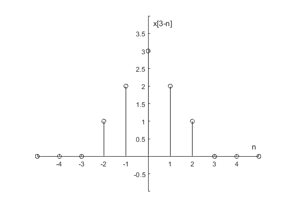

Objetivos de la Práctica
Al igual que en la Práctica 1 se utilizó Python para resolver un problema, en este caso se resolvió el primer problema de la práctica correspondiente con el problema 3.11-2 de Lathi versión clase, a continuación se muestra una imágen evidencia de los resultados y el código fuente se puede checar en el siguiente enlace
Considerar la función de tiempo discreto . En MATLAB se usan funciones anónimas para describir estas funciones.
f = @(n) exp(-n/5).*cos(pi*n/5).*(n>=0);
Esta función anónima trabaja correctamente para escalamientos horizontales mayores a 1, como en f[2n]; pero no lo hace correctamente cuando el escalamiento es menor a 1, como en f[n/2]. Modificar la función anónima para obetener las gráficas correctas. Prueba la modificación graficando f(n/2) en el intervalo (-10<=n<=10).
f = @(n) exp(-n/5).*cos(pi*n/5).*(n>=0); n = (-10:10); stem(n,f(n),'k'); plano = gca; plano.XAxisLocation = "origin"; plano.YAxisLocation = "origin"; plano.Box = "off"; xlabel('n'); ylabel('f[n]'); stem(n,f(2*n),'k'); plano = gca; plano.XAxisLocation = "origin"; plano.YAxisLocation = "origin"; plano.Box = "off"; xlabel('n'); ylabel('f[2n]'); %Función original% f = @(n) exp(-n/5).*cos(pi*n/5).*(n>=0); %Parámetro de escalamiento 1/a% a = 2; %Arreglo con los múltiplos del parámetro de escalamiento% n1 = n(1,mod(n,a)==0):a:n(1,length(n)); %Función escalada% stem(n1,f(n1/a),'k'); plano = gca; plano.XAxisLocation = "origin"; plano.YAxisLocation = "origin"; plano.Box = "off"; xlabel('n'); ylabel('f[n/2]');
Desde la señal en la figura P3.1-1b, graficar:
(a) x[-n]
(b) x[n+6]
(c) x[n-6]
(d) x[3n]
(e) x[n/3]
(f) x[3-n]
f = @(n) n.*(u(n)-u(n-4)) + (-n+6).*(u(n-4)-u(n-7)); u = @(n) 1.0.*(n>=0); n = (-30:30); stem(n,f(n),'k'); plano = gca; plano.XAxisLocation = "origin"; plano.YAxisLocation = "origin"; plano.Box = "off"; title('Fig. P3.1-1b'); xlabel('n'); ylabel('x[n]'); axis([-2 9 -1 4]);
(a) x[-n]
stem(n,f(-n),'k'); plano = gca; plano.XAxisLocation = "origin"; plano.YAxisLocation = "origin"; plano.Box = "off"; xlabel('n'); ylabel('x[-n]'); axis([-9 2 -1 4]);
(b) x[n+6]
stem(n,f(n+6),'k'); plano = gca; plano.XAxisLocation = "origin"; plano.YAxisLocation = "origin"; plano.Box = "off"; xlabel('n'); ylabel('x[n+6]'); axis([-8 4 -1 4]);
(c) x[n-6]
stem(n,f(n-6),'k'); plano = gca; plano.XAxisLocation = "origin"; plano.YAxisLocation = "origin"; plano.Box = "off"; xlabel('n'); ylabel('x[n-6]'); axis([4 15 -1 4]);
(d) x[3n]
stem(n,f(3*n),'k'); plano = gca; plano.XAxisLocation = "origin"; plano.YAxisLocation = "origin"; plano.Box = "off"; xlabel('n'); ylabel('x[3n]'); axis([-5 5 -1 5]);
(e) x[n/3]
%Parámetro de escalamiento 1/a% a = 3; %Arreglo con los múltiplos del parámetro de escalamiento% n1 = n(1,mod(n,a)==0):a:n(1,length(n)); %Función escalada% stem(n1,f(n1/a),'k'); plano = gca; plano.XAxisLocation = "origin"; plano.YAxisLocation = "origin"; plano.Box = "off"; xlabel('n'); ylabel('x[n/3]'); axis([-4 20 -1 4]);
(f) x[3-n]
stem(n,f(3-n),'k'); plano = gca; plano.XAxisLocation = "origin"; plano.YAxisLocation = "origin"; plano.Box = "off"; xlabel('n'); ylabel('x[3-n]'); axis([-5 5 -1 4]);
Suponga que ya existe un vector x en MATLAB correspondiente a una señal en tiempo discreto de duracion finita
(a) Escribe una función en MATLAB que, pasandole el vector x , calcule y retorne Ex la energía de x[n]
function [Ex] = Ex(x) x=x.^2; Ex=sum(x); end
(b) Escribe una función en MATLAB que, pasandole el vector x , calcule y retorne Px, la potencia de x[n], asuma que x[n] es periodica y que el vector x contiene la informacion de un periodo entero de x[n]
function [Px] = Px(x) n=length(x); x=x.^2; Px=sum(x)/n; end
3.1-1 c) Calcule la energía de la señal
n=(-4:1:4); x=[0,-9,-6,-3,0,3,6,9,0]; stem(n,x) grid on plano = gca; plano.XAxisLocation = "origin"; plano.YAxisLocation = "origin";
se puede observar que nuestro vector x=[0,-9,-6,-3,0,3,6,9,0] por lo que usando la funcióno creada anteriormente podremos saber el resultado de la energía de esta señal
Ex(x)
ans = 252
3.1-2 b) Calcule la potencia de la señal
n=(-3:1:15); x=[-3,-2,-1,0,1,2,3,0,0,0,0,0,-3,-2,-1,0,1,2,3]; stem(n,x) grid on plano = gca; plano.XAxisLocation = "origin"; plano.YAxisLocation = "origin";
Se puede observar que nuestro vector x=[-3,-2,1,0,1,2,3,0,0,0,0,0] por lo que usando la función creada se puede calcular
x=[-3,-2,-1,0,1,2,3,0,0,0,0,0]; Px(x)
ans =
2.3333
En el siguiente apartado se deja como evidencia de que se realizo una aplicación para poder gráficar los problemas realizados a lo largo de esta práctica. Dicha aplicación también cuenta con la opción de gráficar señales en tiempo discreto ingresadas por el usuario recuerde seguir las instrucciones especificadas dentro de la aplicación para su óptimo funcionamiento. La aplicación se puede descargar a través del siguiente enlace